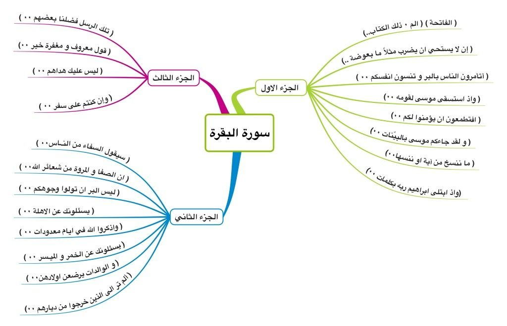

<div class="post" *ngIf="postDataAssigned.value">
  <div class="slider-controlers">
    <button class="prev-btn" (click)="moveToPreviousMedia()">
      <svg>
        <use xlink:href="#prev-arrow-icon" href="#prev-arrow-icon"></use>
      </svg>
    </button>
    <div id="slider" #slider class="slider">
      <div class="slider__post-media">
        <!--  -->
        
      </div>
      <div class="slider__post-media">
        
      </div>
      <div class="slider__post-media">
        
      </div>
      <div class="slider__post-media">
        <!-- <video *ngIf="postData.content.media?.video" controls>
          <source [src]="postData.content.media?.video" type="video/mp4" />
          No video support.
        </video> -->
        <video controls>
          <source
            src="../../../../../assets/main-module/post-images/Most beautiful Quran💚recitation short clips-EP56QmsagZ4.mp4"
            type="video/mp4"
          />
          No video support.
        </video>
      </div>
    </div>
    <button class="next-btn" (click)="moveToNextMedia()">
      <svg>
        <use xlink:href="#next-arrow-icon" href="#next-arrow-icon"></use>
      </svg>
    </button>
  </div>
  <p class="text">
    {{ postData.content.text }}
  </p>
</div>

<!-- svgs -->
<svg xmlns="http://www.w3.org/2000/svg" style="display: none">
  <symbol id="prev-arrow-icon" viewBox="0 0 24 24" fill="currentColor" >
    <path
      d="M14.71 6.71c-.39-.39-1.02-.39-1.41 0L8.71 11.3c-.39.39-.39 1.02 0 1.41l4.59 4.59c.39.39 1.02.39 1.41 0 .39-.39.39-1.02 0-1.41L10.83 12l3.88-3.88c.39-.39.38-1.03 0-1.41z"
      stroke="#5b618a"
      stroke-width="1"
    />
  </symbol>

  <symbol id="next-arrow-icon" viewBox="0 0 24 24" fill="currentColor">
    <path
      d="M9.31 6.71c-.39.39-.39 1.02 0 1.41L13.19 12l-3.88 3.88c-.39.39-.39 1.02 0 1.41.39.39 1.02.39 1.41 0l4.59-4.59c.39-.39.39-1.02 0-1.41L10.72 6.7c-.38-.38-1.02-.38-1.41.01z"
      stroke="#5b618a"
      stroke-width="1"
    />
  </symbol>
</svg>
